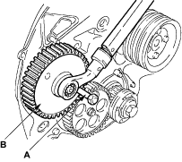

Fuel Supply Pump Pulley Removal
- Lock fuel supply pump pulley using TDC fixing bolt (A), then remove the fuel supply pump pulley fixing nut.

- Use special tool 5-8840-7002-0 to remove the fuel supply pump pulley (B).
Camshaft Pulley Removal
- Lock the camshaft pulley with TDC fixing bolt (A).

- Remove the camshaft pulley fixing bolt (B).
- Remove the camshaft pulley (C).
Special Tool Required
Crankshaft pulley fixing wrench 5-8840-7008-0
Front Dust Cover Installation
- Install the front dust cover (A) and tighten the bolts (B), (C).
Tightening torque: 9.8 Nm (1.0 kgf/m, 7.2 lbf/ft)

Crankshaft Pulley Installation
- Insert the flange (A) to face the flange limb towards pulley side, then install the crankshaft pulley (B).